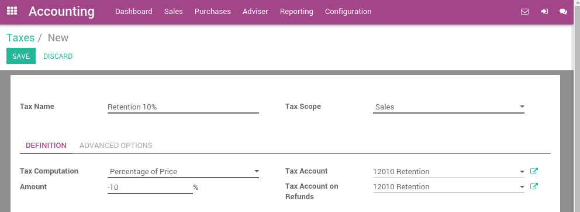
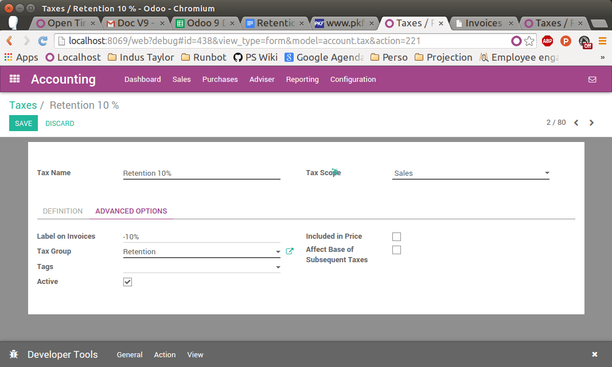

A withholding tax, also called a retention tax, is a government requirement for the payer of a customer invoice to withhold or deduct tax from the payment, and pay that tax to the government. In most jurisdictions, withholding tax applies to employment income.
With normal taxes, the tax is added to the subtotal to give you the total to pay. As opposed to normal taxes, withholding taxes are deducted from the amount to pay, as the tax will be paid by the customer.
As, an example, in Colombia you may have the following invoice:

In this example, the company who sent the invoice owes $20 of taxes to the government and the customer owes $10 of taxes to the government.
Configuration
In Odoo, a withholding tax is defined by creating a negative tax. For a retention of 10%, you would configure the following tax (accessible through ):
In order to make it appear as a retention on the invoice, you should set a specific tax group Retention on your tax, in the Advanced Options tab.
Once the tax is defined, you can use it in your products, sales order or invoices.
Tip
If the retention is a percentage of a regular tax, create a Tax with a Tax Computation as a Tax Group and set the two taxes in this group (normal tax and retention).
Applying retention taxes on invoices
Once your tax is created, you can use it on customer forms, sales order or customer invoices. You can apply several taxes on a single customer invoice line.

Note
When you see the customer invoice on the screen, you get only a Taxes line summarizing all the taxes (normal taxes & retentions). But when you print or send the invoice, Odoo does the correct grouping amongst all the taxes.
The printed invoice will show the different amounts in each tax group.
See also